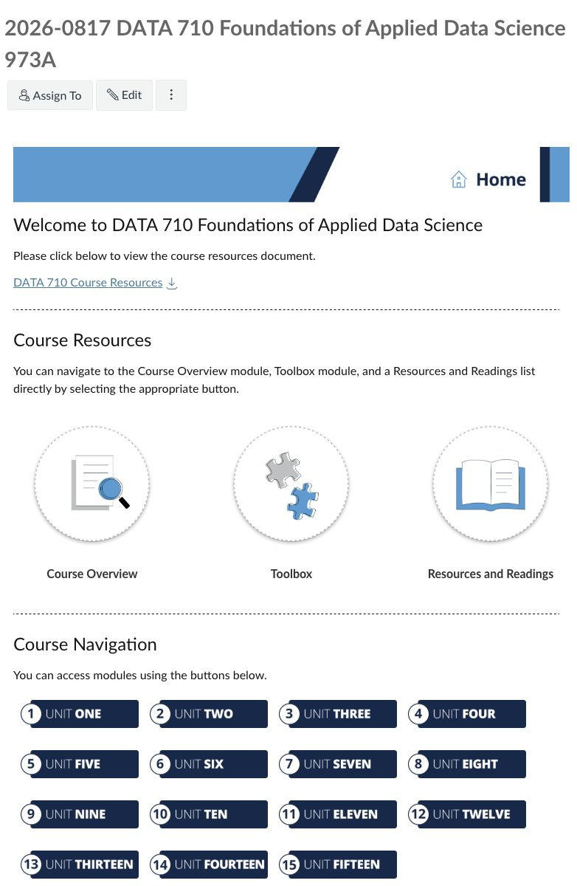
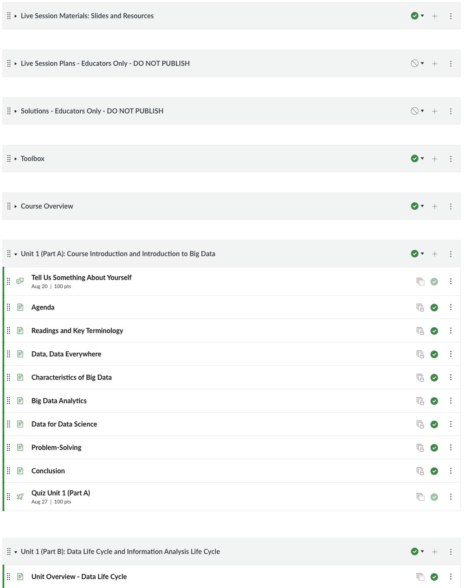
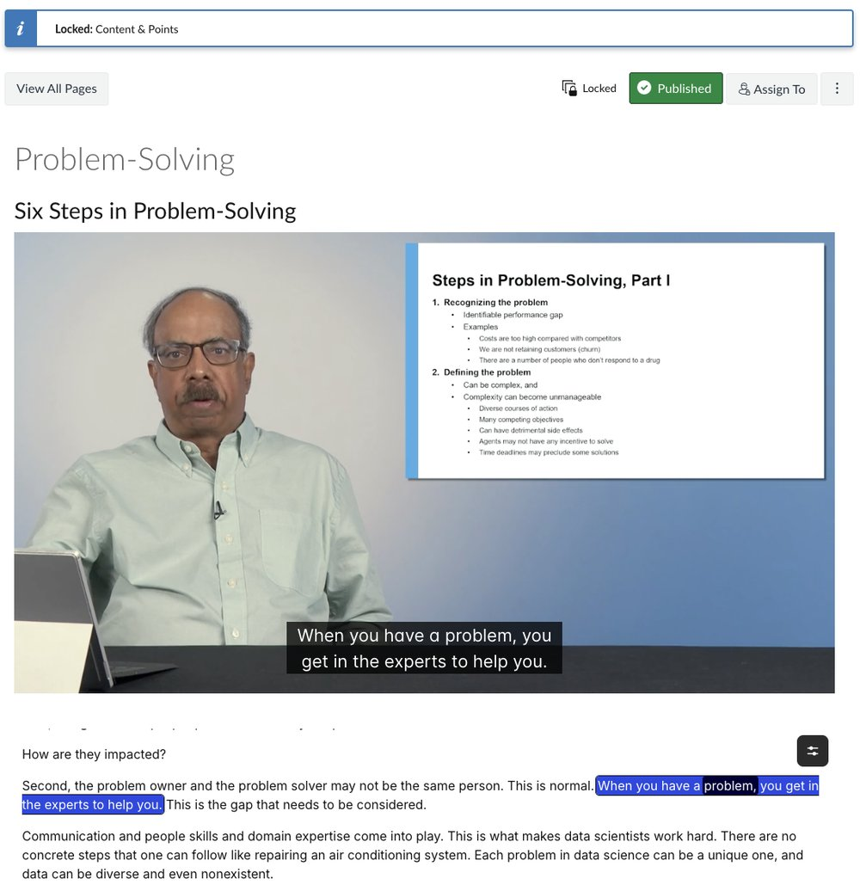
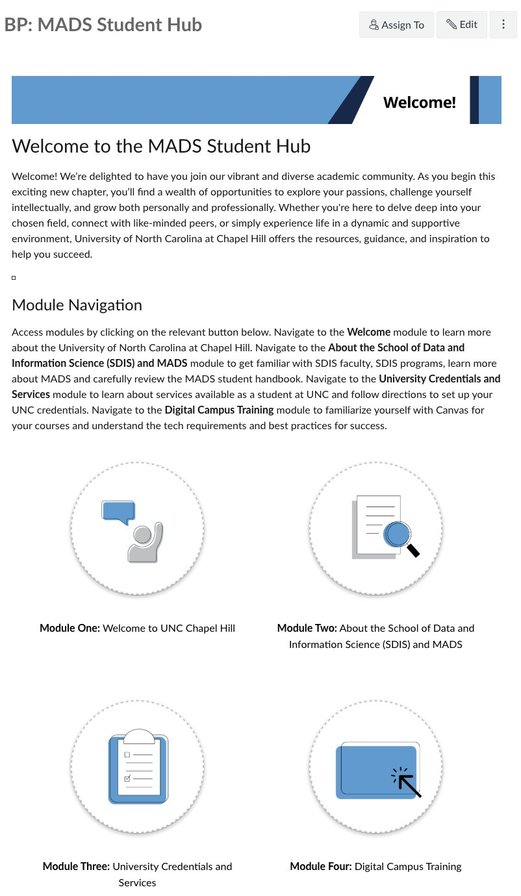
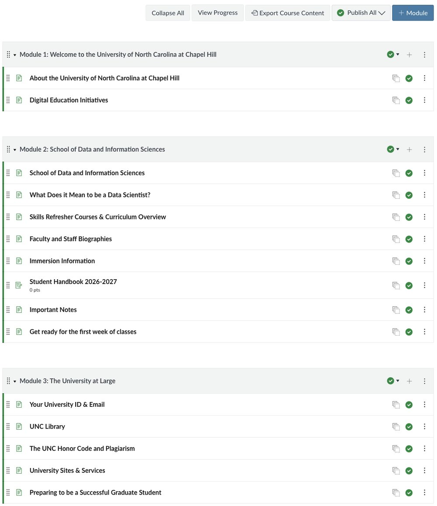
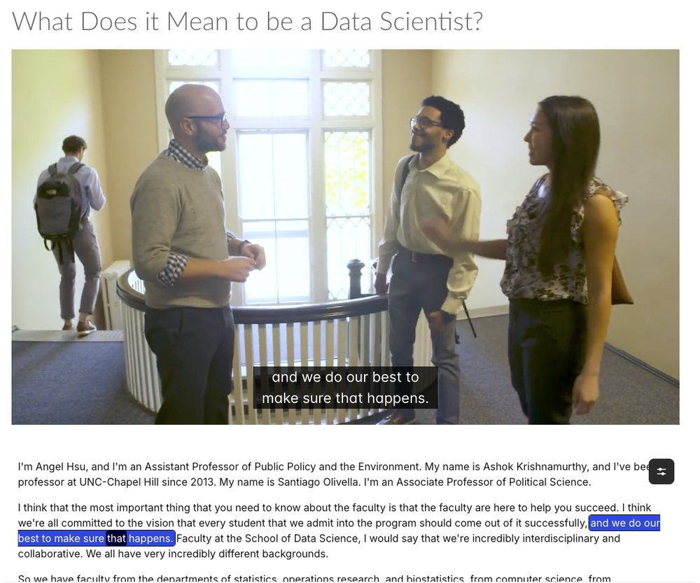

Project Overview
During my internship with the School of Data and Information Science (SDIS) at UNC-Chapel Hill, I supported Canvas course development for the online Master of Applied Data Science (MADS) program. My work covered two areas:
- Mirroring MADS courses: I helped rebuild program courses in new Canvas course sites, including DATA 710: Foundations of Applied Data Science, with lecture videos delivered through Panopto.
- The MADS Student Hub: I helped create a Canvas space that orients new graduate students and supports their academic success throughout the program.
Why It Matters
Online graduate students meet the program almost entirely through Canvas. Courses that are consistent, complete and easy to navigate let students focus on learning data science instead of searching for materials.
Mirroring DATA 710
DATA 710 runs across fifteen units. Mirroring it meant rebuilding the course in a new Canvas site so that every page, video, assignment and quiz matched the original and worked for the new term.

Consistent Module Structure
Each unit follows the same pattern: an agenda, readings and key terminology, content pages, a conclusion and a quiz. Instructor-only modules (live session plans and solutions) stay unpublished, so students only see what they need.

Lecture Video with Panopto
I embedded the course's lecture videos with Panopto, so each content page plays its video inside Canvas with closed captions and an interactive transcript that highlights along with the speaker. Students can read, search or review a lecture as well as watch it.

The MADS Student Hub
The Student Hub is a non-credit Canvas space for every MADS student. It brings together what new graduate students need to start strong, which used to be scattered across university websites and emails.

Four Orientation Modules
1 · Welcome to UNC
About the university and its digital education initiatives.
2 · SDIS and MADS
The school, faculty and staff biographies, skills refresher courses, the curriculum, immersion information and the student handbook.
3 · The University at Large
University ID and email setup, the library, the Honor Code and plagiarism, campus services and tips for graduate study.
4 · Digital Campus Training
How to use Canvas, the technology requirements and best practices for online learning.


Design & Quality Practices
- Consistency across courses: shared home page layouts, banners and module patterns, so students who learn one MADS course can navigate the next.
- Accessible media: captions and interactive transcripts on every Panopto video, with Ally accessibility reports available in each course.
- Clear navigation: visual buttons on the home page and plain-language directions for where to go and why.
- Careful publishing: checking that student content is published and instructor-only materials stay hidden.
Reflection
Key Learnings
- At the scale of a full degree program, consistency is a design decision: a repeated structure lowers the effort students spend finding their way.
- Mirroring a course takes careful quality checks, because a missing video, link or due date affects every student in the section.
- Orientation content works best when it answers new students' real first-week questions in short pages, not long documents.